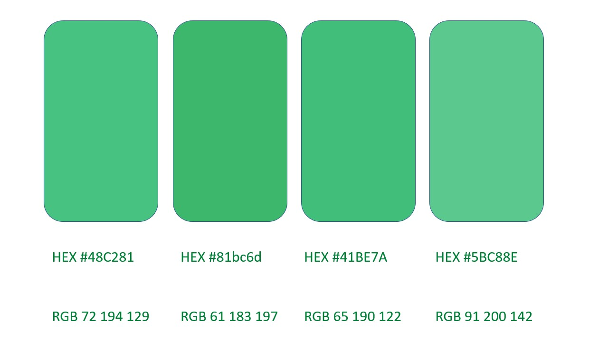

AlligaBot
Equipes


![[Douglas Monteles]](https://avatars.githubusercontent.com/u/54580766?v=4&s=45)
Termo de Abertura do Projeto
Este documento viabiliza conceitualmente a visão inicial do projeto como um todo.
Histórico de versões
| Data | Versão | Descrição | Autor(es) |
|---|---|---|---|
| 23/08/2021 | 0.1 | Criação da versão inicial do documento | Ana Carolina |
| 24/08/2021 | 0.2 | Adição das equipes e da estratégia de comunicação | Pedro Lucas |
| 26/08/2021 | 0.3 | Exclusão do antigo tópico 8, Correção de informações no documento | Ana Carolina |
| 11/09/2021 | 0.4 | Correção do nome comum do bot,erros ortográficos, dos riscos, tabela de equipes jutando com os papéis e definições e mudança dos usuários | Ana Carolina |
1. Introdução
O documento tem como objetivo informar propósitos, objetivos e requisitos de alto nível, além de especificações de planejamento do chatbot, informacional e conversacional.
2. Descrição
O AlligaBot é um chatbot disponibilizado no mensageiro Telegram, que tem como objetivo salientar a conversação, trazer informação e tirar dúvidas sobre: Vacinação, Prevenção e Políticas Públicas a respeito da COVID-19, além de disparar alertas sobre as circunstâncias de cada tema.
3.Próposito e Justificativa
Com o surgimento da COVID-19, o entendimento sobre essa nova doença foi buscado por todos os profissionais da saúde, pelo qual tentou responder as milhares de dúvidas decorrentes do CoronaVírus. Diante disso, a informação de modo claro, direto e de fácil acesso ainda persiste em continuar não sendo entregue por todos os brasilienses que tem acesso a internet e faz uso das redes sociais e meios de comunicação. Entretanto, para solucionar essa falta de conhecimento básico, informação importante para qualquer cidadão que precisa para se proteger, o chatbot veio para facilitar esse entendimento prévio sobre três aspectos, fazendo a comunicação direta e de fácil acesso aos cidadãos. Ele sugere as principais informações sobre vacinação, prevenção e políticas públicas, agregando em principal o governo a poder compartilhar a informação verdadeira e simples para todos.
4.Objetivos
O objetivo do chatbot é aumentar a circulação de informações verídicas e viabilizar que elas sejam de fácil e rápido acesso, além de serem constantemente atualizadas. Sem o chatbot, essas informações são disponibilizadas em vários meios de telecomunicação, porém muitas das vezes, elas ainda não são acessíveis a todos e nem sempre corretas de acordo com as novas descobertas científicas.
5. Partes Interessadas
5.1 Usários
O público se remete aos brasilienses, usuários do chatbot.
5.2 Equipes e Papéis:
Plus Ultra:
| Papel | Descrição | Responsável |
|---|---|---|
| Scrum Master | É o membro que faz todos os outros funcionarem, responsável por retirar possíveis impedimentos, mapear os conhecimentos e ajudar no controle de qualidade e tarefa da equipe. | Amanda Nobre |
| Product Owner | Responsável por entendere compartilhar a visão do produto, portanto, orgazinar a ordem de desenvolvimento de acordo com as necessidades mapeadas. | Pedro Lucas |
| Arquiteto de Software | Atua como um analista, sendo assim, devem ter uma analise critica do software, entender estrutura e otimizar as funcionalidades. | Victor Eduardo |
| DevOps | Reponsável por configurar e ensinar a equipe a configurar diversos ambientes necessários para o projeto, como de desenvolvimento, automatização de teste, entre outros. | Yudi Yamane |
| Desenvolvedor | O desenvolvedor deve desenvolver, testar e garantir que o código está sendo feito da melhor forma possível. | Erick Levy e Douglas Monteles |
Capivara:
| Papel | Descrição | Responsável |
|---|---|---|
| Scrum Master | É o membro que faz todos os outros funcionarem, responsável por retirar possíveis impedimentos, mapear os conhecimentos e ajudar no controle de qualidade e tarefa da equipe. | Matheus Sousa |
| Product Owner | Responsável por entendere compartilhar a visão do produto, portanto, orgazinar a ordem de desenvolvimento de acordo com as necessidades mapeadas. | Ana Carolina |
| Arquiteto de Software | Atua como um analista, sendo assim, devem ter uma analise critica do software, entender estrutura e otimizar as funcionalidades. | Kathlyn Lara |
| DevOps | Reponsável por configurar e ensinar a equipe a configurar diversos ambientes necessários para o projeto, como de desenvolvimento, automatização de teste, entre outros. | Thais Rebouças |
| Desenvolvedor | O desenvolvedor deve desenvolver, testar e garantir que o código está sendo feito da melhor forma possível. | Eduardo Lavenhagem e Lameque Fernandes |
Slow Bros:
| Papel | Descrição | Responsável |
|---|---|---|
| Scrum Master | É o membro que faz todos os outros funcionarem, responsável por retirar possíveis impedimentos, mapear os conhecimentos e ajudar no controle de qualidade e tarefa da equipe. | Henrique Hida |
| Product Owner | Responsável por entendere compartilhar a visão do produto, portanto, orgazinar a ordem de desenvolvimento de acordo com as necessidades mapeadas. | Matheus Akio |
| Arquiteto de Software | Atua como um analista, sendo assim, devem ter uma analise critica do software, entender estrutura e otimizar as funcionalidades. | Matheus Raphael |
| DevOps | Reponsável por configurar e ensinar a equipe a configurar diversos ambientes necessários para o projeto, como de desenvolvimento, automatização de teste, entre outros. | Luiz Pettengill |
| Desenvolvedor | O desenvolvedor deve desenvolver, testar e garantir que o código está sendo feito da melhor forma possível. | Kayro Cesar |
6.Requisitos de Alto Nível
Estão entre os requisitos de alto nível:
- Interação atráves de linguagem natural para melhor usabilidade;
- Fluxos de conversa objetivos e práticos;
- Construir personalidade do chatbot;
- Obtenção de informações contidas nas APIS e imerso nas dúvidas do CoronaVírus, aumentando o cunho informacional do chatbot.
7. Riscos
| ID | Se | por conta | o impacto será | Categoria EAR |
|---|---|---|---|---|
| RN01 | O projeto não atender os requisitos | de falhas no levantamento de requisitos e na validação constante | atraso na entrega do produto e necessidade de redefinição dos requisitos | Requisitos |
| RN02 | A tecnologia usada apresentar problemas | do seu proprietário | atraso na entrega do produto e necessidade de troca de tecnologia equivalente | Tecnologias |
| RN03 | Os arquitetos não conseguirem planejar e garantir a execução da arquitetura | da falta de conhecimento das tecnologias do projeto | dificuldade na organização e atraso no desenvolvimento | Complexidade |
| RN04 | A equipe de desenvolvimento não se adaptar às tecnologias escolhidas | da falta de conhecimento das tecnologias do projeto | atraso na entrega do produto ou falha total da entrega | Complexidade |
| RN05 | Houverem dificuldades em realizar testes | da falta de conhecimento | atraso na entrega das histórias planejadas | Complexidade |
| RN06 | Os DevOps não conseguirem automatizar o deploy e a integração contínua | de falta de conhecimento | atraso na entrega do produto em ambiente de produção | Complexidade |
| RN07 | Os DevOps não conseguirem automatizar o deploy e a integração contínua | de indefinição da Arquitetura do projeto | atraso na entrega do produto em ambiente de produção e necessidade de replanejamento da arquitetura | Complexidade |
| RN08 | O produto final estiver em baixa qualidade | da falhas da equipe de desenvolvimento | refazer todo o produto e necessidade de replanejamento | Qualidade |
| RN09 | As atividades não forem concretizadas no prazo | da falta de integração da equipe de desenvolvimento | atraso na baseline do projeto | Estimativa/Dependência |
| RN10 | Houver histórias de usuário mal definidas | da falta de elicitação de requisitos de forma adequada | atraso na entrega do produto e necessidade de redefinição das histórias | Estimativa |
| RN11 | Houver Sprint mal planejada | de histórias mal planejadas | atraso na entrega do produto, dificuldade na compreensão das histórias e necessidade de replanejamento | Estimativa/Priorização |
| RN12 | Houver mudança no escopo | da falha no planejamento | atraso e necessidade de replanejamento ou projeto não ser concluído a tempo | Planejamento |
| RN13 | Houver falta de comunicação na equipe | da não utilização dos meios de comunicação definidos | dificuldade no gerenciamento da equipe por parte do Scrum Master e falta de alinhamento das equipes | Comunicação |
| RN14 | Houver problemas na comunicação da equipe | do número de membros | dificuldade no gerenciamento da equipe por parte do Scrum Master e falta de alinhamento das equipes | Comunicação |
| RN15 | Membros da equipe abandonarem o projeto | da desmotivação, sobrecarga causadas ou não pela pandemia | sobrecarga entre os membros restantes e necessidade de replanejamento | Recursos/Pandemia |
| RN16 | Houver perda ou defeitos em equipamentos | de mal uso ou acidentes | atraso na entrega do projeto e necessidade de replanejamento | Recursos |
| RN17 | Houver o cancelamento do projeto | de falta de interesse do cliente | interrupção do projeto | Cliente |
| RN18 | A qualidade do software não corresponder às expectativas do cliente | de má implementação | descontentamento do Cliente e possibilidade de cancelamento do projeto | Cliente/Qualidade |
| RN19 | Houver greve na UnB | de orientações de assembleias do corpo docente ou estudantil | interrupção do projeto | Greve na UnB |
8. Requisitos para a aprovação
- Ter a possibilidade de ser acessado pelo mensageiro Telegram.
- Ter implementado as funcionalidades definidas pelo escopo do projeto.
- Atender as especificações dos requisitos levantados.
9. Estratégia de Comunicação
Meios de comunicação utilizados: Telegram, discord, aulas e meets.
Outras ferramentas que são utilizadas: GitHub, Miro e Google Drive.
10.Referências
LOVEMONDAYS. Salários para programadores e equipe de analista, arquiteto, scrum master, DevOps e PO. Disponível em: https://www.lovemondays.com.br/. Acesso em 23 de Agosto de 2021.
EGEWARTH, Eliseu; EGEWARTH, João; GAMA, Gabriela; ALVES, Isaque. Dulce - Termo de Abertura de Projeto. Disponível em: https://github.com/fga-eps-mds/2017.1-Trezentos/wiki/Termo-de-Abertura-do-Projeto. Acesso em 23 de Agosto de 2021.
AUGUSTO,Guilherme; OLIVEIRA, Ícaro; SOUZA, Letícia. Lino, o bot - Termo de Abertura de Projeto. Disponível em: https://botlino.github.io/docs/doc-tap. Acesso em 23 de Agosto de 2021.
Rank de tarifas. ANEEL Agência Nacional de Energia Elétrica. Disponível em http://www.aneel.gov.br/ranking-das-tarifas. Acesso em 23 de Agosto de 2021.
FRANÇA, Diego; SCONETTO, João; MENDES, Mariana; ARNAUD, Victor. Dr. Down - Termo de Abertura de Projeto. Disponível em: https://fga-eps-mds.github.io/2018.1-Dr-Down/eps/TAP/. Acesso em 23 de março de 2021.
YOSHIDA, Eduardo; SILVA, Guilherme; SOUZA, Kamilla; PAULA, Lucas; FREITAS, André; LEMOS, Gabriela; ALVES, Gustavo; ALVES, Iuri; SILVA, Pedro. Aix, o bot - Termo de Abertura de Projeto. Disponível em: https://fga-eps-mds.github.io/2019.1-Aix/projeto/2019/03/27/tap/. Acesso em 23 de março de 2021.
Documento de Visão
Este documento estará repleto de dados que sustentarão o propósito, o contexto e a visão geral do produto, permitindo assim o entendimento do escopo do projeto. Assim, será explicado o problema evidenciado, a oportunidade encontrada, a descrição dos principais envolvidos, uma possível solução, suas principais funcionalidades e seus requisitos, para assim obter uma melhor compreensão do escopo e diminuir os riscos.
Histórico de versões
| Data | Versão | Descrição | Autor(es) |
|---|---|---|---|
| 26/08/2021 | 0.1 | Criação da estrutura do documento | Thaís Rebouças |
| 26/08/2021 | 0.2 | Criação da primeira versão | Ana Carolina |
| 27/08/2021 | 0.3 | Adição de conteúdo dos subtópicos 1.5, 2.2, 3.5, 3.6 e o tópico 4.0 | Ana Carolina |
| 01/09/2021 | 0.4 | Revisão do documento e adição dos subtópicos 3.2, 3.7 e tópico 5 | Thaís Rebouças |
| 10/09/2021 | 0.5 | Correções ortográficas | Thaís Rebouças |
| 11/09/2021 | 0.6 | Correções ortográficas e morfologicas | Ana Carolina |
1. Introdução
1.1 Finalidade
Este documento tem como objetivo demonstrar as características do desenvolvimento da aplicação em questão. Além disso, visa auxiliar no contexto em que a ferramenta se aplica. O objetivo deste artigo será definir o problema, os perfis das partes interessadas e do usuário, o campo de negócio no qual a iniciativa será inserida, além de requisitos, recursos e especificações do sistema em pauta.
1.2 Escopo
Esse projeto tem como objetivo o desenvolvimento de um chatbot com 3 temas, cuja principal finalidade é a de solucionar diversas dúvidas que surgem entre a população acerca da COVID-19, disponibilizando informações sobre vacinação, prevenção e políticas públicas conectando a informação atual ao público. Visando a conexão direta da informação simplificada, que vem de pesquisas e artigos científicos juntamente com as políticas criadas pelos governos para frear a contaminação e a desinformação.
1.4 Definições, Acrônimos e Abreviações
Estarão listadas neste tópico definições, acrônimos e abreviações para garantir uma maior proximidade para com o leitor e o público interessado no projeto.
| Sigla/Termo/Acrônimo | Definição |
|---|---|
| MDS | Métodos de Desenvolvimento de Software |
| EPS | Engenharia de Produto de Software |
| FGA | Faculdade do Gama |
| UNB | Universidade de Brasília |
1.5 Referências
Documento de Visão: A estrutura de tópicos do documento de visão. IBM. Disponível em: https://www.ibm.com/docs/pt-br/elm/6.0.5?topic=requirements-vision-document. Acesso em: 26 de Agosto de 2021;
Documento de Visão. kalkuli. Disponível em: https://fga-eps-mds.github.io/2018.2-Kalkuli/docs/docVisao. Acesso em: 26 de Agosto de 2021;
Documento de Visão. Acacia. Disponível em: https://fga-eps-mds.github.io/2019.2-Acacia/#/vision_document?id=_5-recursos-do-produto. Acesso em: 27 de Agosto de 2021;
Documento de Visão. Aix. Disponível em: https://fga-eps-mds.github.io/2019.1-Aix/projeto/2019/03/29/documento-de-visao/. Acesso em: 27 de Agosto de 2021;
1.6 Visão Geral
Desta forma, a ideia principal deste documento de visão é fornecer de maneira objetiva e organizada os assuntos que tangem à problemática inicial. As informações serão organizadas em tópicos referentes aos seguintes temas, como modelos de exemplo: o contexto da tecnologia no momento atual (pandêmico), o detalhamento dos perfis interessados, as funcionalidades principais da ferramenta a ser produzida bem como características técnicas do produto.
2. Posicionamento
2.1 Oportunidade de negócios
A dúvida e a desinformação no período pandêmico comumente engrandecido por informações falsas nas redes sociais têm sido um grande desafio aos profissionais da saúde e pesquisadores. Prejudicando também a comunicação entre o governo e a população. Com o intuito de facilitar e aumentar o direcionamento da informação clara, de linguagem simples e advindas de fontes confiáveis, o programa concebido pela equipe de desenvolvimento busca atuar como ajudante desses profissionais e do Governo. Desenvolvendo um programa com interação automática com o usuário, o projeto foi criado justamente com foco no público em geral. O principal beneficente é a pessoa física que carece de informações verdadeiras.
2.2 Descrição do problema
| O problema é | que afeta | cujo impacto é | uma boa solução seria |
|---|---|---|---|
| Alta circulação de informações incorretas ou parcialmente corretas. | População de modo geral. | A falta de informações básicas para lidar com esse momento delicado. | Ofertar informações atualizadas e comprovadas cientificamente para a população de modo simples e claro. |
2.3 Descrição de Posição do Produto
Como um dispositivo alternativo de comunicação, o chatbot apresenta auxílio ao usuário ao demonstrar as funcionalidades de amparo em prevenção, vacinação e políticas públicas explicando de forma simples e direta quanto às dúvidas gerais sobre a Covid-19.
| Para | que | o produto | que | diferente de | nosso produto |
|---|---|---|---|---|---|
| Pessoas físicas | tem dificuldade em encontrar informações verdadeiras | é um chatbot que fala sobre a covid de forma interativa | auxilia na redução das principais questões | CoronavirusBRBot que apenas apresenta dados | tira dúvidas e conversa. |
3. Descrição dos Envolvidos e dos Usuários
3.1 Resumo dos Envolvidos
| Nome | Descrição | Responsabilidade |
|---|---|---|
| Equipe de Desenvolvimento | Estudantes do curso de Engenharia de Software das disciplinas de MDS | Contribuir ativamente com o desenvolvimento e implementação do software citado neste documento |
| Equipe de Gestão do Projeto | Estudantes do curso de Engenharia de Software das disciplinas de MDS | Gerenciar tempo, escopo, riscos, tomadas de decisões para garantir a viabilidade do projeto e garantir a aplicação dos princípios ágeis |
| Equipe de avaliação e suporte | Professor e monitores da disciplina de MDS | Auxiliar a equipe ao longo do desenvolvimento do projeto |
3.2 Resumo dos Usuários
| Nome | Descrição | Responsabilidade |
|---|---|---|
| Pessoas físicas | Pessoas que querem informações sobre a COVID-19 ou que querem ser alertadas sobre novidades relacionadas ao tema | Utilizar o sistema e sufruir de suas funcionalidades |
3.3 Ambiente do Usuário
Os usuários poderão utilizar a aplicação por meio da plataforma Telegram, mobile ou desktop.
3.4 Perfis dos Envolvidos
3.4.1 Equipe avaliação e suporte
| Representantes | Descrição | Tipo | Responsabilidades | Critério de sucesso | Envolvimento |
|---|---|---|---|---|---|
| Profa. Carla | Equipe responsável pela avaliação e direcionamento do projeto | Professora e coach do grupo da disciplina | Direcionar e dar suporte a equipe de desenvolvimento e gestão, nas disciplinas Métodos de Desenvolvimento de Software e Engenharia de Produto de Software, quanto ao desenvolvimento do projeto | A entrega do projeto juntamente com uma documentação coerente estabelecida, a partir das orientações dadas ao longo do semestre | Alto |
3.4.2 Equipe de Desenvolvimento e Gestão do Projeto
Capivara:
| Papel | Descrição |
|---|---|
| Scrum Master | Matheus Sousa |
| Product Owner | Ana Carolina |
| Arquiteto de Software | Kathlyn Lara |
| DevOps | Thais Rebouças |
| Desenvolvedor | Eduardo Lavenhagem e Lameque Fernandes |
Plus Ultra:
| Papel | Descrição |
|---|---|
| Scrum Master | Amanda Nobre |
| Product Owner | Pedro Lucas |
| Arquiteto de Software | Victor Eduardo |
| DevOps | Yudi Yamane |
| Desenvolvedor | Erick Levy e Douglas Monteles |
Slow Bros:
| Papel | Descrição |
|---|---|
| Scrum Master | Henrique Hida |
| Product Owner | Matheus Akio |
| Arquiteto de Software | Matheus Raphael |
| DevOps | Luiz Pettengill |
| Desenvolvedor | Kayro Cesar |
3.5 Perfis dos Usuários
| Representante | Descrição | Tipo | Responsabilidade | Critério de sucesso | Envolvimento |
|---|---|---|---|---|---|
| Pessoas físicas interessadas por informações | Pessoas que querem informações sobre a COVID-19 ou que querem ser alertadas sobre novidades relacionadas ao tema | Usuários desinformados | Além de utilizar o programa e usufruir de suas funcionalidades, o usuário deve alertar sobre possíveis falhas ou informações faltantes | Circulação de informações e o reconhecimento do auxílio do chatbot | Pessoas físicas interessadas por informações |
3.6 Principais Necessidades dos Usuários ou dos Envolvidos
3.6.1 Necessidades dos envolvidos
| Necessidade | Prioridade | Solução Atual | Solução Proposta |
|---|---|---|---|
| Ferramenta que auxilie na circulação de informações | Ser acessível | Jornais, Sites, Blogs, Canais de Youtube, Redes Sociais | Uma forma flexível, confiável, simples, direta e menos trabalhosa de auxílio à informação |
3.7 Alternativas e concorrências
3.7.1 CoronavirusBRBot
É um chatbot que apresenta os dados sobre o número de infectados e mortos pela COVID-19 no Brasil, por totalidade e regiões. Além de mostrar gráficos facilitando a visualização desses dados.
4. Visão geral do Produto
4.1 Perspectiva do Produto
O objetivo do chatbot em questão é aumentar a circulação de informações verídicas e viabilizar que elas sejam de fácil e rápido acesso, além de serem constantemente atualizadas. Sem o chatbot, essas informações são disponibilizadas em vários meios de telecomunicação, porém muitas vezes as informações se perdem, elas ainda não são acessíveis a todos e nem sempre corretas e/ou atualizadas seguindo as novas descobertas científicas.
4.2 Resumo das capacidades
As capacidades do produto vão de encontro com as necessidades do público em geral que tem anseio por informações fáceis, atuais e verídicas sobre o CoronaVírus e pessoas físicas que ainda não possuem conhecimento sobre as informações mais comuns que devem ter acesso, ambos conhecendo os elementos das três funcionalidades mais comuns atualmente. Assim, o chatbot será capaz de ofertar informações relacionadas a esta realidade da COVID-19, incluindo informações de novas pesquisas sobre as vacinas. Por fim, todos esses recursos foram pensados para que o chatbot seja capaz de estar sempre auxiliando o utilizador no tocante a barrar informações falsas ou a falta delas.
5. Recursos do Produto
5.1 Interação
O chatbot interage com o usuário, levando informações comprovadas de modo leve e com uma linguagem simples.
5.2 Informação
O chatbot carrega informações de prevenção e cuidados no geral, além de tirar dúvidas mais frequentes a respeito das vacinas aprovadas pela ANVISA.
5.3 Avisos e cuidados
O chatbot traz dicas de home office, saúde mental, além de atualizar o usuário com novidades sobre descobertas e casos da COVID-19.
5.4 Lembrete programado
O usuário poderá programar o chatbot para receber lembretes das próximas doses da vacina.
Documento de Arquitetura
Histórico de revisão
| Data | Versão | Alteração | Autor |
|---|---|---|---|
| 10/08/2021 | 0.1 | Abertura do documento de Arquitetura | Victor Eduardo |
| 21/08/2021 | 0.2 | Definição de tecnologias, e diagrama arquitetural | Victor Eduardo, Matheus Raphael |
| 08/09/2021 | 0.3 | Correção de pequenos erros presentes no documento | Victor Eduardo |
| 11/09/2021 | 0.4 | Correção de pequenos erros presentes no documento | Victor Eduardo |
1. Introdução
1.1 Finalidade
Este documento tem como finalidade apresentar a arquitetura do projeto ChatBot, de forma que fique de fácil entedimento a estrututra arquitetural do projeto, e sejam mostradas todas as decisões relacionadas a ela.
1.2 Escopo
Essa documentação engloba as funções visadas pelo projeto, além das tecnologias usadas, seu diagrama de relações e casos de uso. Engloba também algumas outras informações técnicas como características de desempenho e qualidade. O projeto vem sendo desenvolvido por alunos da UNB-FGA, na disciplina MDS.
1.3 Definições, acrônimos e abreviações
| Abreviação | Significado |
|---|---|
| API | Application Programming Interface |
| FGA | Faculdade do Gama |
| MDS | Métodos de Desenvolvimento de Software |
| NLU | Natural-language understanding |
| UNB | Universidade de Brasília |
1.4 Referências
- Chat Bot. Disponível em https://github.com/fga-eps-mds/2021-1-Bot. Acesso em 10/08/2021.
- Como documentar a Arquitetura de Software. Disponível em http://www.linhadecodigo.com.br/artigo/3343/como-documentar-a-arquitetura-de-software.aspx. Acesso em 10/08/2021.
- Documento de Arquitetua GloriaBot. Disponível em: https://github.com/fga-eps-mds/2019.2-GloriaBot/blob/master/docs/DocumentoDeArquitetura.md. Acesso em 10/08/2021.
- Documento de Arquitetura Tino. Disponível em: https://github.com/fga-eps-mds/2019.1-Tino/blob/master/docs/documento-de-arquitetura.md. Acesso em 10/08/2021.
- Documento de Arquitetura Vamos Cuidar. Disponível em: https://fga-eps-mds.github.io/2020.1-VC_Usuario/#/docs/Documento_de_Arquitetura. Acesso em 10/08/2021.
1.5 Visão Geral
Este documento está dividído em 6 grandes tópicos, com subdivisões, com o objetivo final de detalhar as características arquiteturais do projeto, bem como seus requisitos e motivações:
| |Tópico|Descrição|
|-|------|---------|
|1|Introdução|Fornece ao leitor uma visão geral do conteúdo abordado no documento|
|2|Representação Arquitetural|Detalha a arquitetura utilizada no projeto e como ela está organizada|
|3|Metas e Restrições da Arquitetura|Descreve os objetivos do projeto, bem como suas restrições, do ponto de vista arquitetural|
|4|Visão dos Casos de Uso|Descreve as partes significativas do ponto de vista da arquitetura do modelo de casos de uso|
|5|Visão Lógica|Descreve as partes significativas do ponto de vista da arquitetura do modelo de design|
|6|Tamanho e Desempenho|Descreve as características de desempenho do Software, bem como as restrições estabelecidas e possíveis falhas|
2. Representação da Arquitetura

A representação arquitetural do ciclo de funcionamento está explicitada na imagem acima, e explicada por meio do passo a passo abaixo:
1 - O ciclo começa quando o usuário envia uma mensagem para o AlligaBot;
2 - Após isso a mensagem é repassada ao bot onde primeiro a mensagem passa pelo Rasa NLU que processa a mensagem;
3 - Depois, no Rasa Core, é feita a etapa de identificar a intenção do usuário;
4 - O Rasa escolherá a resposta mais adequada através do Rasa Actions;
5 - E por último retornará tal resposta ao usuário via Telegram;
Obs.: Por se tratar de um ChatBot, o projeto conta apenas com a parte de Back-end, realizada através do Rasa, uma vez que o Front-end seria exatamente a interface do app Telegram que é responsável pela interação com o usuário, ou seja receber a mensagem do usuário e passá-la ao bot, e de mostrar ao usuário o retorno dado pelo bot.
2.1 Tecnologias
2.1.1 Rasa

Para a construção do sistema usaremos o Rasa, um framework utilizado para construção de bot's de conversação. A escolha dele foi feita por ser uma alternativa open source, robusta e de fácil uso para implementação, a escolha de seu uso foi feita pelos tecnologistas que o consideraram a melhor opção para o desenvolvimento do projeto. O framework conta com 3 principais componentes, o Rasa NLU que é responsável por processar a mensagem enviada pelo usuário, o Rasa Core que é responsável por identificar a intenção do usuário e o Rasa Actions, que dada a intenção do usuário, este escolhe a resposta mais adequada a se retornar ao usuário.
O Rasa aprende de acordo com que for sendo treinado, através de seu machine learning, e através do NLU consegue-se fazer também um bot "mais humano".
2.1.2 Telegram

O local o qual o usuário poderá interagir com o bot será no Telegram sendo ele um app de troca de mensagens. A implementação de bot's à plataforma é gratuita e disponibilizada pelo próprio app.
2.1.3 Python

A linguagem de programação a ser utilizada no bot será o Python, já que o Rasa também a utiliza.
3. Metas e restrições de Arquitetura
3.1 Metas
O projeto aqui apresentado trata-se de um chatbot integrado a plataforma Telegram e tem como função informar ao usuário acerca dos conteúdos sobre a COVID-19 com informações fornecidas, dentre outros, pelo site Corona Cidades, sobre como prevenir o contágio, gestão pública, e informações relacionadas à vacinação na região do usuário.
3.2 Restrições
- Possuir conexão com a internet
- Dispositivo com acesso ao Telegram
- O sistema entenderá apenas mensagens em Português - BR
3.3 Requisitos não funcionais
- O sistema deve possuir integração com a plataforma Telegram
- O sistema deve conversar com o usuário em linguagem natural
- O sistema deve ser capaz de receber a localização do usuário, quando necessário
- O bot deve ser treinado a fim de conseguir atender ao máximo de usuários possíveis
4. Visão dos Casos de Uso
4.1 Atores de Casos de Uso
| Ator | Descrição |
|---|---|
| Usuário | O usuário poderá interagir com o bot através do chat da plataforma Telegram, utilizando linguagem natural |
4.2 Descrições de Casos de Uso
| Épico | Caso de uso | Descrição |
|---|---|---|
| E1 | Sobre o bot | Será uma epic para ser uma informação inicial, onde o usuário terá o primeiro contato com o bot e terá uma breve explicação sobre suas funcionalidades |
| E2 | Informações sobre covid | Será uma epic para informar o usuário e tirar dúvidas gerais sobre a covid |
| E3 | Lembrete programado | Será uma epic para criar lembretes programados |
Informações mais detalhadas dos épicos podem ser encontradas no documento de Backlog do Produto.
5. Visão Lógica
5.1 Diagrama de Pacotes
- O pacote 2021-1-Bot é o pacote principal do projeto e contém todos os outros sub-pacotes
- No pacote bot é o local onde está sendo desenvolvido o bot
- No pacote docs pode ser encontrada toda a documentação relacionada ao projeto
- No pacote gerencia está todo o gerenciamento de sprints de cada time
6. Tamanho e desempenho
Este bot atuará primeiramente no Telegram, seu tamanho e desempenho serão comuns com aplicações semelhantes de ChatBots que utilizam a tecnologia Rasa.
O desempenho poderá ser afetado devido a serviços externos, como consultas de dados sobre vacinações ou instabilidades de sistemas.
Requisitos do produto
Este documento esta com a elicitação dos requisitos gerados no início do projeto.
Histórico de versões
| Data | Versão | Descrição | Autor(es) |
|---|---|---|---|
| 02/09/2021 | 0.1 | Criação da estrutura do documento | Ana Carolina |
| 02/09/2021 | 0.2 | Criação da primeira versão | Ana Carolina |
| 11/09/2021 | 0.3 | Correção de bugs da extensão e alteração de localidade para a pasta docs; Alteração do nome bot para chatbot e correção ortográfica | Ana Carolina |
Categoria de prioridades
| Tipo | Descrição |
|---|---|
| Alta | Requisitos indispensáveis para o funcionamento do chatbot |
| Intermediária | Requisitos importantes para o sistema, mas caso não sejam implementados não resultará em um mau funcionamento do chatbot |
| Útil | Requisitos que não são usados com tanta frequência e não são tão significativos na satisfação que o usuário tem sobre o chatbot |
Lista de requisitos
| Identificador | Requisito | Dependente de | Prioridade |
|---|---|---|---|
| RF01 | Permitir que o usuário diga olá, para começar a conversa. | --- | Alta |
| RF02 | Mostrar a lista funcionalidades dos três temas logo depois da primeira interação. | RF01 | Alta |
| RF03 | Permitir ao usuário solucionar dúvidas gerais sobre a COVID-19. | RF02 | Alta |
| RF04 | Permitir que o usuário saiba informações sobre as vacinas que estão disponíveis. | RF01,RF02 | Alta |
| RF05 | Permitir que o usuário saiba sobre a prevenção no sentido geral.(comum) | RF01 | Alta |
| RF06 | Permitir que o usuário saiba sobre prevenção em locais fechados e abertos. | RF01,RF05 | Alta |
| RF07 | Permitir que o usuário visualize o número de infectados. | RF01,RF02 | Baixa |
| RF08 | Permitir que o usuário receba notificação sobre a data da próxima vacina. | RF04 | Alta |
| RF00 | Habilitar comunicação entre as normas de políticas públicas em conjunto com vacinação e prevenção. | --- | Alta |
| RF10 | Permite ao usuário saber mais sobre o CoronaVírus. | RF03 | Alta |
| RF11 | Suportar o grande número de informações atualizadas sobre a COVID-19 no banco de dados. | --- | Intermediária |
| RF12 | Assegurar a qualidade e transparência da informação com o usuário. | --- | Alta |
| RF13 | Permitir ao usuário saber dos sintomas quando infectado. | RF03 | Alta |
| RF14 | Permitir que ele saiba os lugares de testes. | RF14 | Alta |
| RF15 | Permitir que o usuário dê tchau ao chatbot sabendo que a conversa acabou. | RF01 | Útil |
Guia de Identidade Visual
Histórico de Revisão
| Data | Versão | Modificação | Autor |
|---|---|---|---|
| 19/08/2021 | 0.1 | Criação da versão inicial do documento | Kathlyn Lara |
| 01/09/2021 | 0.2 | Logo do bot e paleta de cores | Kathlyn Lara |
| 04/09/2021 | 0.3 | Novo logo do bot | Kathlyn Lara |
| 09/09/2021 | 0.4 | Fonte e paleta de cores nova | Kathlyn Lara |
| 10/09/2021 | 0.5 | Introdução do documento | Kathlyn Lara |
| 11/09/2021 | 0.6 | Correção do nome do chatbot e padronização do nome chatbot | Ana Carolina |
| 12/09/2021 | 0.7 | Ajuste nas referências | Kathlyn Lara |
1. Introdução
Este documento tem como finalidade apresentar a "aparência" do AlligaBot para os usuários, ou seja, seu logo, sua paleta de cores e sua letra, que será presente tanto no chatbot de conversação do Telegram como no site do GitHub Pages.
2. Apresentação da Identidade Visual
Justificativa
Um jacaré amigável segurando uma seringa.
3. Fontes
Obs.: As fontes aqui citadas são da página github.io do AlligaBot, já que o produto em si irá utilizar as fontes padrão da máquina (smartphone/notebook) do usuário.
A fonte utilizada na aplicação será:
- Poppins(SIL OPEN FONT LICENSE Version 1.1)
Figura 1 - Poppins
 Fonte: Free Best Fonts
Fonte: Free Best Fonts
Disponível em: https://www.freebestfonts.com/poppins-font. Acesso em 12 de set. de 2021.
Esta fonte é sans-serif, facilitando a leitura para pessoas com dislexia, já que são "sem serif", isto é, não possui traços e hastes rebuscadas.
Figura 2 - Sans-serif
 Font: New England ReproGraphics
Font: New England ReproGraphics
Discponível em: https://newenglandrepro.com/serif-vs-sans-serif-typeface/. Acesso em 12 de set. de 2021.
Além disso, estas fontes possuem boa adaptação para aplicações responsivas, como o deste projeto, adaptando-se para visualização web e mobile e também possuem licença que permite uso gratuito.
Uso das fontes
Incluindo no HTML
Coloca-se no o seguinte trecho de código:
<link href="https://fonts.googleapis.com/css?family=Poppins" rel="stylesheet">
Incluindo no CSS
Coloca-se no css, para a utilização das fontes:
font-family: 'Poppins', sans-serif;
4. Paleta de cores
Obs.: As cores aqui citadas são da página github.io do AlligaBot, já que o produto em si irá utilizar as cores padrão da máquina (smartphone/notebook) do usuário.
5. Referências
MALTA, Fabíola; SALOMÃO, Hugo; GOMES, Leonardo - Guia de Estilo e Identidade Visual. Disponível em: https://github.com/fga-eps-mds/2019.2-Acacia/blob/develop/docs/style_guide.md. Acesso em 12 de set. de 2021.
Personalidade do Bot
Histórico de versões
| Data | Versão | Modificação | Autor |
|---|---|---|---|
| 19/08/2021 | 0.1 | Criação da versão inicial do documento | Kathlyn Lara |
| 25/08/2021 | 0.2 | Adição da personalidade | Kathlyn Lara |
| 01/09/2021 | 0.3 | Modificação do nome do bot | Kathlyn Lara |
| 11/09/2021 | 0.4 | Correção de erros ortográficos | Ana Carolina |
| 12/09/2021 | 0.5 | Padrão ABNT nas referências | Kathlyn Lara |
1. Introdução
O documento da Personalidade do Bot é aquele que irá mostrar o nome e o mbti do chatbot e como eles foram escolhidos
2. Nome do Bot
AlligaBot
2.1 Ferramentas usadas para a escolha do nome
Devido a piada que quem vacinar, vira jacaré, decidimos escolher um nome que nos lembra jacaré.
3. Personalidade do Bot
"Os Cônsules são altruístas, e levam a sério a responsabilidade de ajudar e fazer o que é certo."
"Compassivos e extrovertidos [...] As personalidades Cônsules realmente gostam de ouvir seus amigos e saber sobre seus relacionamentos e atividades, lembrando pequenos detalhes e sempre prontos a conversarem com afeto e sensibilidade. Se as coisas não estão indo bem, ou há tensão na sala, os Cônsules percebem isso e tentam restaurar a harmonia e estabilidade no grupo."
"Essas personalidades dedicam muito esforço as atividades que organizam."
Figura 1 - ESFJ

Fonte: 16personalities
Disponível em: https://www.16personalities.com/br/personalidade-esfj. Acesso em 12 de set. de 2021.
3.1 Ferramentas usadas para a escolha da personalidade
Teste no 16personalities baseado no que esperamos do AlligaBot.
4. Referências
PERSONALIDADE "Cônsul". 16personalities, 2021. Disponível em: https://www.16personalities.com/br/personalidade-esfj. Acesso em 12 de set. de 2021.
Estrutura Analítica do Projeto (EAP)
Histórico de versões
| Data | Versão | Descrição | Autor(es) |
|---|---|---|---|
| 23/08/2021 | 0.1 | Abertura do documento | Amanda Nobre |
1. Introdução
A Estrutura Analítica do Projeto (EAP) é uma subdivisão de trabalhos dentro de um projeto, que permite a visão clara das principais entregas, o que facilita o controle de tempo e de custo.
2. Diagrama
 Feito por: Amanda Nobre, Henrique Hida e Matheus Sousa
Feito por: Amanda Nobre, Henrique Hida e Matheus Sousa
Autora: Amanda Nobre.
Referências
JUSTO, Andreia. EAP (Estrutura Analítica do Projeto): o que é, como fazer e qual a diferença entre EAP e Cronograma. EUAX. 11 de dez. de 2018. Disponível em: https://www.euax.com.br/2018/12/eap-estrutura-analitica-projeto/. Acesso em: 23 de ago. de 2021.
Plano de Gerenciamento de Riscos
Histórico de versões
| Data | Versão | Descrição | Autor(es) |
|---|---|---|---|
| 31/08/2021 | 0.1 | Abertura do documento | Amanda Nobre |
1. Introdução
O Plano de Gerenciamento de Riscos fornece informações sobre papéis e responsabilidades relativas aos riscos e descreve as categorias de risco que podem ser expressas como uma estrutura analítica dos riscos.
2. Objetivo
O objetivo do Plano de Gerenciamento de Riscos é documentar os riscos associados ao projeto e as ações a serem tomadas para que eles sejam mitigados ou contingenciada.
3. Estrutura Analítica dos Riscos
Uma forma comum para estruturar categorias dos riscos, representadas hierarquicamente, usa a estrutura analítica dos riscos (EAR). Uma EAR possibilita a melhor vizualização de todos as fontes de riscos, sendo útil para identificação e categorização.
 Estrutura Analítica dos Riscos deste projeto.
Estrutura Analítica dos Riscos deste projeto.
3.1. Risco Técnico
| Tipo | Descrição |
|---|---|
| Requisitos | Riscos gerados pela falta de mapeamento e elicitação de requisitos |
| Tecnologias | Riscos gerados pela tecnologia usada |
| Complexidade | Riscos gerados pela falta de conhecimento e pela forma na qual a equipe de desenvolvimento se adapta a tecnologia escolhida |
| Qualidade | Riscos decorrentes da qualidade do produto final |
3.2. Risco de Gerenciamento
| Tipo | Descrição |
|---|---|
| Estimativa | Riscos que podem afetar o tempo de produção do projeto |
| Controle | Riscos relacionados ao controle de atividades |
| Planejamento | Riscos relacionados ao planejamento de confecção do projeto |
| Comunicação | Riscos relacionados às atividades e meio de comunicação, como ruídos ou falta de comunicação da equipe |
3.3. Risco Organizacional
| Tipo | Descrição |
|---|---|
| Recursos | Riscos gerados pela falta de recursos humanos e/ou tecnológicos, como perda ou defeitos em equipamentos ou membros que abandonam o projeto. |
| Priorização | Riscos gerados pela má aplicação da técnica moscow na escolha de histórias de usuários na Sprint |
| Dependências | Riscos que podem afetar a evolução do projeto |
3.4. Risco Externo
| Tipo | Descrição |
|---|---|
| Cliente | Riscos gerados pelo cliente em relação ao produto, como mudanças no escopo devido a um pedido do cliente |
| Pandemia | Riscos gerados pela pandemia |
| Greve na UnB | Risco gerado pela paralisação de atividades na UnB |
4. Identificação dos Riscos
| ID | Se | por conta | o impacto será | Categoria EAR |
|---|---|---|---|---|
| RN01 | O projeto não atender os requisitos | de falhas no levantamento de requisitos e na validação constante | atraso na entrega do produto e necessidade de redefinição dos requisitos | Requisitos |
| RN02 | A tecnologia usada apresentar problemas | do seu proprietário | atraso na entrega do produto e necessidade de troca de tecnologia equivalente | Tecnologias |
| RN03 | Os arquitetos não conseguirem planejar e garantir a execução da arquitetura | da falta de conhecimento das tecnologias do projeto | dificuldade na organização e atraso no desenvolvimento | Complexidade |
| RN04 | A equipe de desenvolvimento não se adaptar às tecnologias escolhidas | da falta de conhecimento das tecnologias do projeto | atraso na entrega do produto ou falha total da entrega | Complexidade |
| RN05 | Houverem dificuldades em realizar testes | da falta de conhecimento | atraso na entrega das histórias planejadas | Complexidade |
| RN06 | Os DevOps não conseguirem automatizar o deploy e a integração contínua | de falta de conhecimento | atraso na entrega do produto em ambiente de produção | Complexidade |
| RN07 | Os DevOps não conseguirem automatizar o deploy e a integração contínua | de indefinição da Arquitetura do projeto | atraso na entrega do produto em ambiente de produção e necessidade de replanejamento da arquitetura | Complexidade |
| RN08 | O produto final estiver em baixa qualidade | da falhas da equipe de desenvolvimento | refazer todo o produto e necessidade de replanejamento | Qualidade |
| RN09 | As atividades não forem concretizadas no prazo | da falta de integração da equipe de desenvolvimento | atraso na baseline do projeto | Estimativa/Dependência |
| RN10 | Houver histórias de usuário mal definidas | de falta elicitação de requisitos de forma adequada | atraso na entrega do produto e necessidade de redefinição das histórias | Estimativa |
| RN11 | Houver Sprint mal planejada | de histórias mal planejadas | atraso na entrega do produto, dificuldade na compreensão das histórias e necessidade de replanejamento | Estimativa/Priorização |
| RN12 | Houver mudança no escopo | da falha no planejamento | atraso e necessidade de replanejamento ou projeto não ser concluído a tempo | Planejamento |
| RN13 | Houver falta de comunicação na equipe | da não utilização dos meios de comunicação definidos | dificuldade no gerenciamento da equipe por parte do Scrum Master e falta de alinhamento das equipes | Comunicação |
| RN14 | Houver problemas na comunicação da equipe | do número de membros | dificuldade no gerenciamento da equipe por parte do Scrum Master e falta de alinhamento das equipes | Comunicação |
| RN15 | Membros da equipe abandonarem o projeto | da desmotivação, sobrecarga causadas ou não pela pandemia | sobrecarga entre os membros restantes e necessidade de replanejamento | Recursos/Pandemia |
| RN16 | Houver perda ou defeitos em equipamentos | de mal uso ou acidentes | atraso na entrega do projeto e necessidade de replanejamento | Recursos |
| RN17 | Houver o cancelamento do projeto | de falta de interesse do cliente | interrupção do projeto | Cliente |
| RN18 | A qualidade do software não corresponder às expectativas do cliente | de má implementação | descontentamento do Cliente e possibilidade de cancelamento do projeto | Cliente/Qualidade |
| RN19 | Houver greve na UnB | de orientações de assembleias do corpo docente ou estudantil | interrupção do projeto | Greve na UnB |
5. Interpretação
| ID | Impacto | Probabilidade | Avaliação | Contingência | Mitigação |
|---|---|---|---|---|---|
| RN01 | Crítico | Muito Alta | 25 | Revalidar todos os requisitos com o Product Owner e com o cliente, e aplicar validação constante nos requisitos levantados | Realizar constantes reuniões entre os membros da equipe, com o cliente e pesquisas necessárias para obtenção de conhecimento e compreensão sobre o escopo do projeto |
| RN02 | Crítico | Baixa | 10 | Trocar para uma tecnologia equivalente | Escolher uma tecnologia com melhor suporte |
| RN03 | Crítico | Média | 15 | Realizar a mudança na Arquitetura do projeto buscando outras tecnologias capazes de solucionar os problemas ocorridos | Buscar conhecimento com outros alunos, professores, pessoas de fora da comunidade universitária, novas pesquisas e/ou cogitar a mudança de tecnologias |
| RN04 | Crítico | Alta | 20 | Indicar treinamentos para a equipe de desenvolvimento sobre a tecnologia escolhida | Estabelecer treinamentos constantes sobre a tecnologia escolhida |
| RN05 | Crítico | Alta | 20 | Indicar treinamentos para a equipe de desenvolvimento sobre testes | Estabelecer treinamentos constantes sobre testes |
| RN06 | Grande | Alta | 16 | Procurar ajuda de alunos, professores, pessoas de fora do ambiente universitário e aumentar a carga de estudos | Realização de pesquisas constantes e consultoria com outros alunos, professores e pessoas de fora do ambiente universitário |
| RN07 | Grande | Alta | 16 | Procurar ajuda de alunos, professores, pessoas de fora do ambiente universitário e aumentar a carga de estudos, por parte do Arquiteto | Realização de pesquisas constantes e consultoria com outros alunos, professores e pessoas de fora do ambiente universitário, por parte do Arquiteto |
| RN08 | Crítico | Muito Alta | 25 | Realizar refatoração de código, testes e validação com o cliente | Realizar treinamentos de todas as tecnologias utilizadas, garantir a realização de testes, boas práticas de programação e validação com o cliente |
| RN09 | Crítico | Alta | 20 | Realizar a entrega na próxima Sprint como dívida técnica e, talvez, realocá-la para uma dupla com mais facilidade com a tecnologia | Planejar as atividades e dividi-las nas sprints com base nos pesos e dificuldade definida no planning poker |
| RN10 | Grande | Muito alta | 20 | Realizar um replanejamento das histórias para que entrem em conformidade com os requisitos | Realizar constantes reuniões entre os membros da equipe, com o cliente e pesquisas necessárias para obtenção de conhecimento e compreensão sobre o escopo do projeto |
| RN11 | Grande | Alta | 16 | Realizar replanejamento da sprint utilizando a priorização do backlog do produto pela técnica moscow | Montar o backlog da sprint utilizando a priorização do backlog do produto pela técnica moscow |
| RN12 | Crítico | Baixa | 10 | Redefinir o quanto antes as mudanças de escopo | Manter sempre a comunicação com o cliente |
| RN13 | Crítico | Muito alta | 25 | Reafirmar a necessidade de um alto grau de comunicação e promover as mudanças necessárias, desde realização de daily meetings mais objetivas a mudanças de ferramentas para comunicação | Criando o Plano de comunicação em que a equipe demonstre comum acordo |
| RN14 | Crítico | Muito alta | 25 | Reafirmar a necessidade de um alto grau de comunicação e promover as mudanças necessárias, desde realização de daily meetings mais objetivas a mudanças de ferramentas para comunicação | Criando o Plano de comunicação em que a equipe demonstre comum acordo |
| RN15 | Grande | Muito alta | 20 | Realocar as tarefas entre os membros presentes | Conversar com a equipe a fim de reafirmar a importância do projeto para que a equipe o priorize |
| RN16 | Grande | Média | 12 | Realocar as tarefas entre os membros com equipamentos que funcionam | Incentivar a manutenção recorrente e o cuidado com equipamentos |
| RN17 | Crítico | Muito Baixa | 5 | Oferecer a melhor possibilidade de produto para o cliente | Manter comunicação constante com o cliente |
| RN19 | Crítico | Alta | 20 | Realizar refatoração de código, testes e validação com o cliente | Realizar treinamentos de todas as tecnologias utilizadas, garantir a realização de testes, boas práticas de programação e validação com o cliente |
| RN19 | Crítico | Muito Baixa | 5 | Aceitar o risco | - |
5.1. Tabela de Probabilidade
| Probabilidade | Intervalo | Peso |
|---|---|---|
| Muito Baixa | menor que 10% | 1 |
| Baixa | de 10% a 25% | 2 |
| Média | de 25% a 50% | 3 |
| Alta | de 50% a 75% | 4 |
| Muito Alta | maior que 75% | 5 |
5.2. Tabela de Impacto
| Impacto | Descrição | Peso |
|---|---|---|
| Insignificante | Impacto insignificante para o andamento do projeto | 1 |
| Pequeno | Impacto com pouca influência no andamento do projeto | 2 |
| Médio | Impacto notável para o andamento do projeto | 3 |
| Grande | Impacto grave para o andamento do projeto | 4 |
| Crítico | Impacto crítico para o andamento do projeto | 5 |
5.3. Avaliação dos Riscos
A avaliação dos riscos é feita multiplicando o peso da probabilidade pelo peso do impacto.
| Impacto/Probabilidade | Muito Baixa | Baixa | Média | Alta | Muito Alta |
|---|---|---|---|---|---|
| Insignificante | 1 | 2 | 3 | 4 | 5 |
| Pequeno | 2 | 4 | 6 | 8 | 10 |
| Médio | 3 | 6 | 9 | 12 | 15 |
| Grande | 4 | 8 | 12 | 16 | 20 |
| Crítico | 5 | 10 | 15 | 20 | 25 |
6. Referências
PMI (2017), UM GUIA DO CONHECIMENTO EM GERENCIAMENTO DE PROJETOS (GUIA PMBOK®), 6ª Ed.
BRASIL, Brasil; Ada - Plano de Gerenciamento de Riscos. Disponível em: https://fga-eps-mds.github.io/2019.1-ADA/#/docs/project/risk_management_plan
VILARINS, Augusto; FRANÇA, Emanoel; SOARES, Ingrid. GamesBI - Riscos. Disponível em: https://fga-eps-mds.github.io/2018.2-GamesBI/viabilidade/riscos.html
Plano de Comunicação
| Data | Versão | Descrição | Autor |
|---|---|---|---|
| 06/09/2021 | 0.1 | Abertura do documento | Amanda Nobre |
| 11/09/2021 | 0.2 | Correção de erros ortográficos e morfológicos | Ana Carolina |
| 11/09/2021 | 0.3 | Correção nas referências | Amanda Nobre |
1. Objetivo
Este documento tem como objetivo oficializar os meios de comunicação entre os membros do projeto, explicitando desde as ferramentas utilizadas até os processos necessários para assegurar que as informações sejam armazenadas, organizadas e distribuídas.
2. Entradas e Ferramentas para o Processo
| Ícone | Ferramenta | Descrição |
|---|---|---|
| Telegram | É a ferramenta principal de comunicação, dado que o semestre é assíncrono. Nesta ferramenta, são discutidos todos os assuntos operacionais, desde horários de reuniões e pautas até a realização das dailys. | |
| GitHub | Ferramenta de versionamento, onde temos os códigos do produto, e por ela comentamos as Issues que são trabalhadas. | |

|
ZenHub | Essa ferramenta ajuda a implementar o kanban no ambiente do projeto. |
| Discord | Utilizado para reuniões como pré-planejamento e planejamento da sprint, sprint review, as vezes daily e quaisquer outras reuniões que forem marcadas. |
3. Diretrizes e procedimentos usados para comunicar
3.1 Comunicação Geral
A comunicação é a chave principal para o bom decorrer da disciplina e do projeto, tendo isso em vista é importante, principalmente nesse semestre atípico, zelar por ela. Portanto os pontos importantes a serem cuidados são:
- Seguir os rituais ágeis, para conseguir manter a comunicação eficaz do projeto (daily, retrospectiva, review);
- Manter as partes interessadas "alinhadas", evitando ao máximo ruídos e sempre comunicando ao fazer algo novo ou alterações.
3.2 Gerência de Reuniões
3.2.1 Pré-planejamento da Sprint
Reunião semanal, pois a sprint dura uma semana, na qual as presenças essenciais são as dos Scrum Masters e dos Product Owners, porém a reunião é aberta para quem mais quiser participar. Nessa reunião são decididos tarefas principais da sprint que serão divididas entre as 3 equipes ou feitas em conjuto.
Reunião geral semanal, onde todos os membros se encontram. O Scrum Master, junto com o Product Owner, Arquiteto e DevOps, decidem as atividades e funcionalidades a serem realizadas pela equipe de Desenvolvimento e equipe de Gerência. Além disso, também avaliadas quais melhorias deverão ser feitas.
O esforço para realizar cada uma das tarefas é medido com a equipe e assim, essas tarefas serão pontuadas. São definidas também as duplas que trabalharão em conjunto. (Pair Programming).
3.2.2 Planejamento da Sprint
Após o pré-planejamento, cada equipe faz uma reunião com todos os integrantes para dividir as tarefas que ficarão alocadas para a equipe entre os membros de acordo com dificuldade e disponibilidade. Além disso também são levantadas quais melhorias podem ser feitas. A Sprint Review e Sprint Retrospective ocorrem no mesmo dia do Planejamento da Sprint.
3.2.3 Daily Meeting
Tarefa realizada pelo telegram ou discord todos os dias, onde cada integrante explica de forma clara três pontos: o que foi feito desde última Daily, o que pretende fazer até a próxima Daily e o que tem atrapalhado a produtividade, dessa forma os integrantes estão todo os dias se mantendo informados do andamento da sprint.
3.2.4 Sprint Review
Reunião para mostrar os resultados positivos da sprint, cada membro mostra o trabalho que fez para que o time possa fornecer e obter feedback.
3.2.4 Sprint Retrospective
Discussão de pontos positivos e negativos da Sprint, levantamento das tarefas realizadas e não realizadas e sugestões de melhoria. A avaliação geral da Sprint é feita pelo Scrum Master, porém todos os pontos (positivos, negativos e a melhorar) são debatidos pela equipe.
4. Referências
FELIPE, Caio; FREITAS, Gesiel; BUSCHE, João Paulo; CARVALHO, Vinícius; PINHEIRO, Vinicius. SIGS - Plano de Gerenciamento de Comunicação. Disponível em: https://github.com/fga-eps-mds/2017.1-SIGS/wiki/Plano-de-Gerenciamento-de-Comunica%C3%A7%C3%A3o#32-gerencia-de-reuni%C3%B5es. Acesso em: 11 de set. de 2021.
BRASIL, Ateldy. Ada - Plano de Comunicação. Disponível em: https://fga-eps-mds.github.io/2019.1-ADA/#/docs/project/communication_plan. Acesso em: 11 de set. de 2021.
Protótipo
Histórico de Revisão
| Data | Versão | Descrição | Autor |
|---|---|---|---|
| 13/09/2021 | 0.1 | Abertura do documento | Amanda Nobre |
1.Introdução
Neste documento constam os protótipos desenvolvidos para melhor visualização da ideia do chatBot e informações acerca do contexto e desenvolvimento dos mesmos.
2.Protótipos de Baixa Fidelidade
As equipes Plus Ultra e Capivara fizeram alguns protótipos de baixa fidelidade com o objetivo de desenvolver estratégias e sintetizar ideias do grupo acerca da visualização do produto.
2.1 Equipe Capivara
 Criado por: Ana Carolina Leite
Criado por: Ana Carolina Leite
 Criado por: Matheus Sousa
Criado por: Matheus Sousa
2.2 Equipe Plus Ultra
 Criado por: Integrantes em conjunto
Criado por: Integrantes em conjunto
 Criado por: Integrantes em conjunto
Criado por: Integrantes em conjunto
3.Protótipos de Alta Fidelidade
Desenvolvidos a partir da ideia inicial dos protótipos de baixa fidelidade.
3.1 Equipe Capivara
O vídeo do protótipo de alta fidelidade da equipe Capivara se encontra aqui.
3.2 Equipe Plus Ultra
Os vídeos dos protótipos de alta fidelidade da equipe Plus Ultra são três:
O vídeo do bot que identifica intenção está aqui. E os vídeos do bot que pergunta o tópico da questão que têm finais diferentes, vídeo 1 e vídeo 2.
Canvas
Histórico de versões
| Data | Versão | Descrição | Autor(es) |
|---|---|---|---|
| 04/09/2021 | 0.1 | Criação da versão inicial do documento | Pedro Lucas e Kathlyn Lara |
1. Introdução
O documento tem como objetivo de mostrar de forma geral alguns pontos específicos do projeto.

Backlog do Produto
Esse documento contêm os itens que deverão ser desenvolvidos pelos times de desenvolvimento, levando em conta os requisitos levantados.
Histórico de revisão
| Data | Versão | Alteração | Autor |
|---|---|---|---|
| 19/08/2021 | 0.1 | Primeira definição de funcionalidades | Pedro Lucas |
| 24/08/2021 | 0.2 | Alterações gerais | Ana Carolina, Pedro Lucas e Thaís Rebouças |
| 24/08/2021 | 0.2 | Criação de épicos e features | Pedro Lucas e Thaís Rebouças |
| 29/08/2021 | 0.3 | Criação de histórias de usuário | Pedro Lucas e Thaís Rebouças |
| 01/09/2021 | 0.4 | Adição da definição do MoSCoW e pequenas correções na estrutura do documento | Thaís Rebouças |
| 01/09/2021 | 0.4 | Adição de priorização levando em conta o time Capivaras | Thaís Rebouças |
| 02/09/2021 | 0.5 | Adição de pontos levando em conta o time Plus Ultra | Pedro Lucas |
Referências
- Railsware Product Academy. MoSCoW prioritization for your product backlog. Youtube, 19 de Setembro de 2019. Disponível em: https://www.youtube.com/watch?v=DzruAbBhY0Q. Acesso em: 01 de Setembro de 2021.
1. Introdução
1.2 Abreviações e seus significados
| Abreviação | Significado |
|---|---|
| EP | Epics |
| FT | Features |
| US | User Stories |
1.3 Termos importantes que serão utilizados nesse documento
| Termo | Definição |
|---|---|
| Epics | Epics são descrições gerais do que se deseja no software |
| Features | Features são semelhantes a Epics, porém são mais detalhadas em relação ao que é função |
| User Stories | User Stories são exemplos de usuários que irão utilizar a função de uma feature em questão |
1.4 Priorização com MoSCoW
O MoSCoW é uma técnica utilizada para definir a prioridade dos requisitos presentes no projeto. As classificações são dadas por Must, Should, Could e Won't, que juntas formam o acrônimo MoSCoW. Essas classificações são dadas, para que se possa hierarquizar a necessidade dos requisitos ao projeto. Entendendo as regras de priorização, fizemos essa classificação para dar início à abertura desse documento.
- Must: Deve ter este requisito para atender às necessidades de negócios.
- Should: Deve ter este requisito, se possível, mas o sucesso do projeto não depende dele.
- Could: Pode ter este requisito se não afetar mais nada no projeto.
- Won't: Gostaria de ter esse requisito mais tarde, mas a entrega não será desta vez.
2. Backlog
EP01: Sobre o bot
Será uma epic para ser uma informação inicial, onde o usuário terá o primeiro contato com o bot e terá uma breve explicação sobre suas funcionalidades.
FT01: Cumprimento/Despedida
| ID | User Story | Prioridade | Pontos |
|---|---|---|---|
| US01 | Eu, como usuário, desejo receber cumprimento do bot para dar início a conversa | Must | 1 |
| US02 | Eu, como usuário, desejo saber o que o bot é | Must | 2 |
| US03 | Eu, como administrador do bot, desejo adicionar o tópico para que o bot seja capaz de manter uma conversa | Must | 1 |
| US04 | Eu, como administrador do bot, desejo adicionar o tópico para que o bot entre em Fallback quando necessário | Must | 1 |
| US05 | Eu, como usuário, desejo receber mensagem de despedida do bot para finalizar a conversa | Must | 1 |
FT02: Apresentação de funcionalidades
| ID | User Story | Prioridade | Pontos |
|---|---|---|---|
| US06 | Eu, como usuário, desejo saber sobre as funcionalidades existentes no bot | Must | 2 |
EP02: Informação sobre covid
Será uma epic para informar o usuário e tirar dúvidas gerais sobre a covid.
FT03: Transmissão e prevenção
| ID | User Story | Prioridade | Pontos |
|---|---|---|---|
| US07 | Eu, como usuário, desejo saber sobre as variantes do covid | Must | 3 |
| US08 | Eu, como usuário, desejo saber sobre as formas de transmissão | Must | 3 |
| US09 | Eu, como usuário, desejo saber mais sobre o vírus | Must | 3 |
| US10 | Eu, como usuário, desejo saber sobre as formas gerais de prevenção | Must | 3 |
| US11 | Eu, como usuário, desejo saber sobre os sintomas da covid | Must | 3 |
| US12 | Eu, como usuário, desejo saber qual a quantidade de infectados por covid na minha cidade/país | Should | 8 |
| US13 | Eu, como usuário, desejo saber qual a quantidade de mortos por covid na minha cidade/país | Should | 8 |
FT04: Regras para lugares específicos
| ID | User Story | Prioridade | Pontos |
|---|---|---|---|
| US14 | Eu, como usuário, desejo saber os cuidados que devo ter em locais abertos | Must | 3 |
| US15 | Eu, como usuário, desejo saber os cuidados que devo ter em locais fechados | Must | 3 |
| US16 | Eu, como usuário, desejo saber qual a diferença de contaminação entre locais abertos e fechados | Must | 3 |
| US17 | Eu, como cliente, desejo saber os cuidados que devo ter em restaurantes | Should | 3 |
| US18 | Eu, como cliente, desejo saber os cuidados que devo ter na academia | Should | 3 |
| US19 | Eu, como cliente, desejo saber os cuidados que devo ter no dentista | Should | 3 |
| US20 | Eu, como cliente, desejo saber os cuidados que devo ter em barbearia/cabelereiro | Should | 3 |
FT05: Como continuar trabalhando de maneira segura
| ID | User Story | Prioridade | Pontos |
|---|---|---|---|
| US21 | Eu, como funcionário, desejo saber os cuidados que devo tomar no escritório | Must | 3 |
| US22 | Eu, como funcionário, desejo saber os cuidados que devo ter no atendimento aos clientes | Must | 3 |
FT06: Preciso pegar transporte público
| ID | User Story | Prioridade | Pontos |
|---|---|---|---|
| US23 | Eu, como usuário, desejo saber como me cuidar no transporte público | Must | 3 |
FT07: Home office e saúde mental
| ID | User Story | Prioridade | Pontos |
|---|---|---|---|
| US24 | Eu, como usuário, desejo saber como lidar com o home office | Should | 5 |
| US25 | Eu, como usuário, desejo saber como posso me exercitar em casa | Should | 5 |
| US26 | Eu, como usuário, desejo saber como cuidar da minha saúde mental na pandemia | Must | 5 |
FT08: Vacinação
| ID | User Story | Prioridade | Pontos |
|---|---|---|---|
| US27 | Eu, como usuário, desejo saber qual a quantidade de vacinados na minha cidade/país | Could | 8 |
| US28 | Eu, como usuário, desejo saber quando posso me vacinar | Must | 5 |
| US29 | Eu, como usuário, desejo saber se as vacinas são seguras | Must | 3 |
| US30 | Eu, como usuário, desejo saber se eu preciso me vacinar | Must | 3 |
| US31 | Eu, como usuário, desejo saber como as vacinas aprovadas pela anvisa agem no organismo | Should | 5 |
| US32 | Eu, como usuário, desejo saber quantas doses da vacina preciso tomar | Must | 5 |
| US33 | Eu, como usuário, desejo saber qual a eficácia de cada vacina aprovada pela anvisa | Must | 5 |
FT09: Detecção
| ID | User Story | Prioridade | Pontos |
|---|---|---|---|
| US34 | Eu, como usuário com suspeita de covid, desejo saber oque fazer | Must | 5 |
| US35 | Eu, como usuário com suspeita de covid, desejo saber aonde me testar | Should | 5 |
| US36 | Eu, como usuário com suspeita de covid, desejo saber qual tipo de exame devo fazer e porque | Must | 5 |
| US37 | Eu, como usuário, testei positivo para covid e quero saber oque fazer | Must | 3 |
EP03: Lembrete programado
Será uma epic para criar lembretes programados.
FT10: Lembrete de vacinação
| ID | User Story | Prioridade | Pontos |
|---|---|---|---|
| US38 | Eu, como usuário, desejo cadastrar a data da próxima dose da vacina | Must | 8 |
| US39 | Eu, como usuário, desejo ser lembrado da próxima dose da vacina | Must | 8 |
FT11: Avisos e cuidados
| ID | User Story | Prioridade | Pontos |
|---|---|---|---|
| US40 | Eu, como usuário, desejo cadastrar interesse em receber mensagens sobre as principais descobertas sobre a covid | Could | 8 |
| US41 | Eu, como usuário, desejo ser notificado sobre as principais descobertas sobre a covid | Could | 8 |
| US42 | Eu, como usuário, desejo cadastrar interesse em receber mensagens sobre dicas de home office | Could | 8 |
| US43 | Eu, como usuário, desejo receber dicas de home office | Could | 8 |
| US44 | Eu, como usuário, desejo cadastrar interesse em receber mensagens sobre dicas de saúde mental | Should | 8 |
| US45 | Eu, como usuário, desejo receber dicas de saúde mental | Should | 8 |
Roadmap do Produto
Esse documento contêm a documentação das atividades realizadas em todas as sprints até a R1.
Histórico de versões
| Data | Versão | Descrição | Autor(es) |
|---|---|---|---|
| 10/09/2021 | 0.1 | Versão 1 do roadmap | Pedro Lucas; Ana Carolina; Matheus Akio |
| 11/09/2021 | 0.2 | Correção de erro ortográfico | Ana Carolina |

Para visualização ampliada, clique no link: Roadmap.pdf
Documentação de evolução de DevOps
Esse documento foi criado com o intuito de centralizar informações sobre deploys e pipelines desenvolvidas e estabilizadas pelo time de DevOps.
Histórico de versões
| Data | Versão | Descrição | Autor(es) |
|---|---|---|---|
| 03/09/2021 | 0.1 | Criação da estrutura inicial | Thaís Rebouças |
| 03/09/2021 | 0.1 | Criação do roadmap | Thaís Rebouças e Yudi Yamane |
| 09/09/2021 | 0.2 | Correção dos links | Thaís Rebouças |
Ferramentas utilizadas
- Ambiente de desenvolvimento: Docker
- Pipeline - CI: GitHub Actions
- Deploy - CD: Heroku
Roadmap
Release 1
Release 2
Como contribuir
Antes de fazer qualquer alteração no repositório, crie uma issue e se responsabilize por essa alteração. Atente-se a política de branchs e a política de commits.
Histórico de versões
| Data | Versão | Descrição | Autor |
|---|---|---|---|
| 30/08/2021 | 0.1 | Envio inicial | Matheus Sousa |
Criação de Issues
Ao criar issues atente-se aos seguintes critérios:
- Já existe issue referente ao assunto que você pretende abordar na sua?
- Aguarde que sua issue seja aprovada por algum dos responsáveis pelo repositório.
Ao criar um Pull Request
Ao fazer um pull request atente-se para:
- Linkar o PR a sua Issue correspondente
- Marcar um dos responsáveis para revisão
Autor: Matheus Sousa|